Final project
Project: To develop a process for monthly diagnostics and QA reporting from air monitors and telemetry devices
Introduction
The QA (Quality Assurance) process for air quality measurements is set out in the relevant guidance LAQM.TG(22). The guidance is from the government department Defra, who are the customer, or client for this activity.
Bristol City Council follows this guidance which essentially requires regular calibration of NOx analysers with a traceable gas. In addition to the calibration activity, other datasets are helpful in verifying and maintaining the good operation of the monitoring network.
The aim of this project is to bring all those sources of data together in a coherent report to summarise the operating characteristics of the monitoring system and provide assurance that the system is operating within desired parameters. The risk to data quality is thereby minimised because data problems are identified early and mitigating measures can be implemented, such as replacing calibration gas, service engineer visits etc.
Data Sources
The sources of data are summarised as follows:
- SQL server database (Envista). Stores air quality measurements and diagnostics data
- Google Drive. Calibration data is collected in the field with google forms and stored in google sheets
- Teltonika Remote Management System (RMS). Parameters for the 4G routers which provide telemetry to the network are available through a REST API.
Data Characteristics
The data used are not classified as personal data. They relate to the operation of the monitoring network and are only of interest to the team managing the operation of the network, or a third party auditor of air quality data such as the UK government or their consultants. The data are not published but could be made available on request. The data are structured, tabular or converted to such from an REST API source.
Data Processing Pipeline
The pipeline for this project was built in R, using the targets package to ensure reproducibility and organise the functions. Data are extracted from the data sources, using database connections, the googlesheets4 R package and the RMS API provided by Teltonika. Various data cleaning and processing functions are implemented in the targets pipeline to prepare the data for output in a Quarto document.
Data Processing Examples
Derive Summary Statistics for Missing Data
A key requirement within the air quality guidance LAQM.TG(22) is that data capture should be maximised and should match or exceed 85% for hourly continuous measurements. Hence a valuable monthly check is the amount of missing data in that month. If significant data are missing it usually indicates a machine or telemetry fault.
In order to calculate this, the hourly continuous data for each instrument is retrieved from the envista database and a function is iterated over the complete dataset to derive the number and percentage of missing observations. The function to retrieve data from envista is not shown as it is quite lengthy, but the missing data calculation is shown below.
The consolidated long aq_data_tbl is split into a list of tibbles, completely empty (redundant) columns removed, and the miss_var_summary() function from the naniar package is mapped over each tibble in the list. The relevant pollutants are filtered from the resulting tibble and the columns are selected and renamed with transmute() function. The resulting tibble is piped into a gt() table in the targets pipeline.
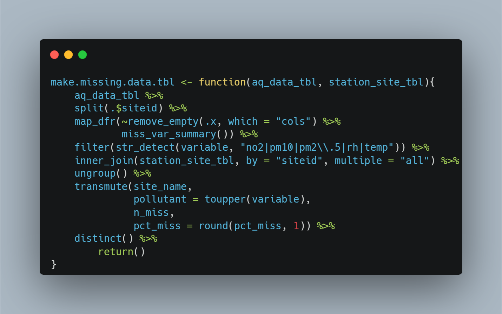
Extract and Process Diagnostics Data
Diagnostics data from the Teledyne API chemiliminescent NOx analysers are captured in a SQL server database on an on - site EnviDAS FW data logger. The data loggers are polled hourly and both measurement and diagnostics data are stored in a corporate SQL server database called “envista”. The diagnostics data are extracted for the reporting.
The code below sets up a database connection by retrieving the connection parameters from a config.yml file. This ensures the credentials are safely stored and not embedded in the code. Even if web based version control (i.e. GitHub) is used, the config.yml file can be added to .gitignore to ensure that the credentials are not published.
The connection object is then used to retrieve the diagnostics table in the get.diag.tbl() function. This function also takes two date parameters and filters the diagnostics table so that only the temporal subset of data needed is retrieved. This function uses the dbplyr backend to generate SQL in R.
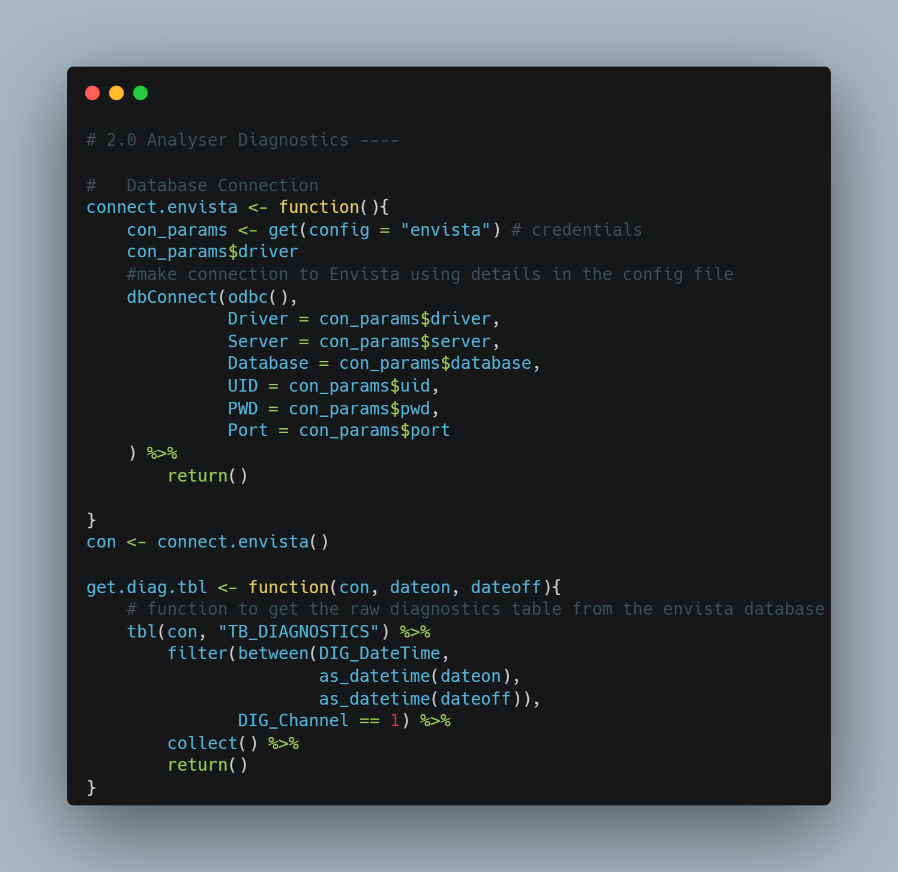
An example of further data processing on the diagnostics data is shown below. This function takes a long version of the diagnostics table, a data frame holding upper and lower limits for the diagnostics parameters, and a data frame relating the site ID’s in the diagnostics table to meaningful site names. It filters for missing, data cleans column data by trimming white space and joins the three data sets to return a cleaned diagnostics table in long format used later in plotting and tabulation. The upper and lower limit data are used in the plotting function to show the normal operating characteristics of the instrument. The line plot for each parameter should normally be within the limits.
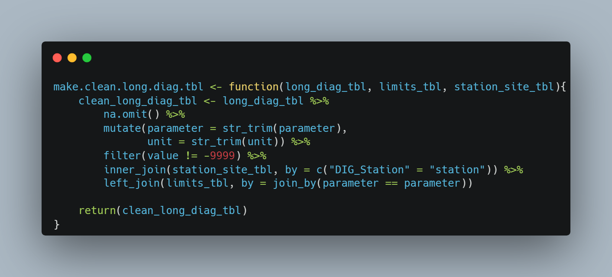
Extract and Process Calibration Data
Fortnightly visits to site capture zero and span calibration measurements for the NOx instruments using a zero air scrubber and a traceable span gas with a known concentration of nitric oxide. The data are entered on a mobile phone or tablet using Google forms and are held on a Google spreadsheet. The spreadsheet calculates the zero and span factors from the data entered, as well as meta data such as the gas bottle ID to ensure traceability in the calibration process. The screenshot below shows a portion of the calibration form used on a mobile device.
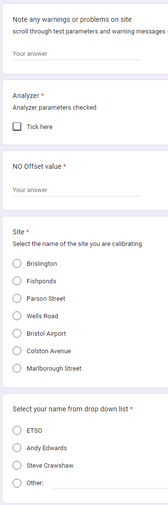
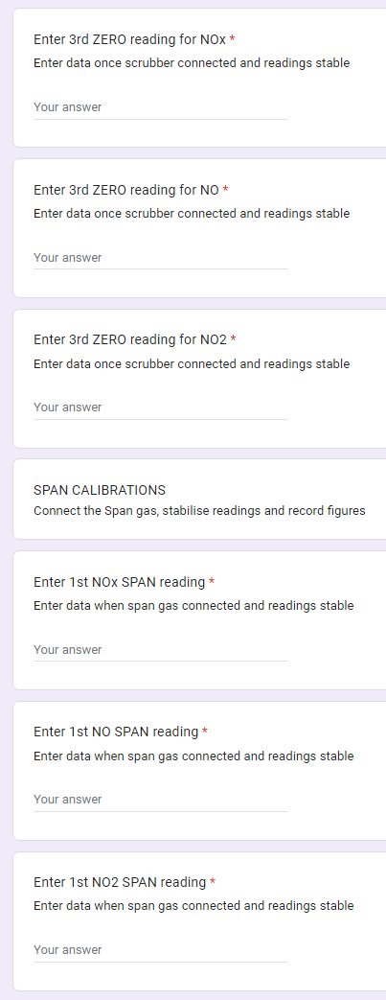
The googlesheets4 package in the tidyverse metapackage in R is used to access the google spreadsheet using the google credentials object, which again is stored in the config.yml file for security. The two functions shown below retrieve calibration and gas metadata from the spreadsheet and range specified in the read_sheet() functions and perform minimal data cleaning before returning a data frame.
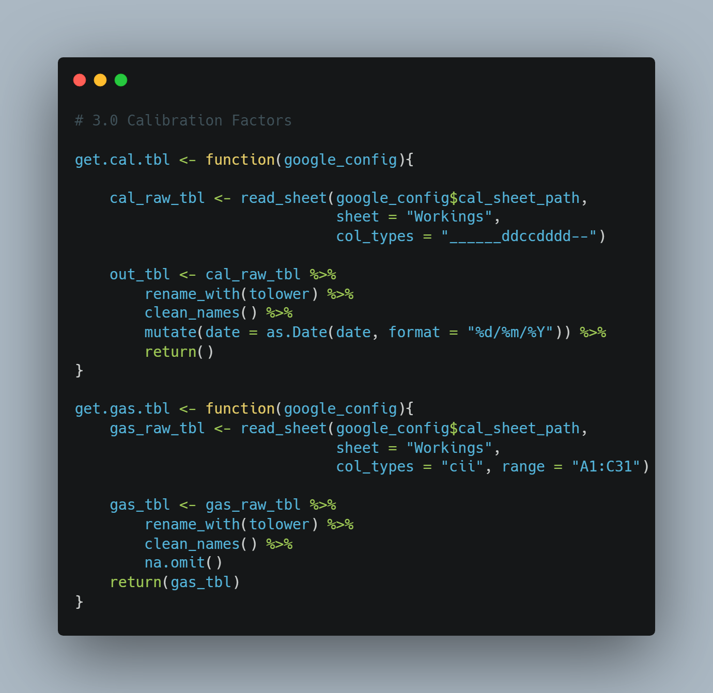
Create Output Table for Calibration Factors and Targets
The gt package in R was used to create a high quality table showing how calibrations compared against ideal values. The calibration data retrieved is pre - processed and passed to the function below. This function filters the data, sets targets for the calibration factors - zero for zero calibration and one for span calibration and groups the resulting data frame by site and date. This data frame is then piped into the gt() function which creates the output table as html. Various formatting functions are used to create the table in an attractive format which conveys the necessary information quickly and clearly to the reader.
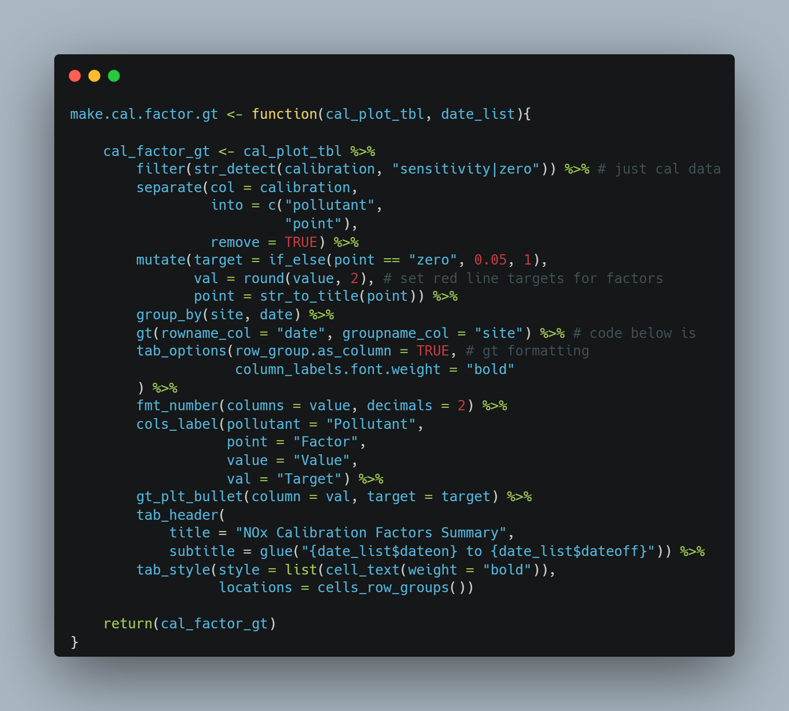
Retrieving Airtime Data from Routers
The Teltonika RMS REST API is used to retrieve router meta - data including airtime data use. Airtime data is limited to 3GB per device spread over all SIMS provided by our airtime provider. Exceeding this limit results in excess charges or potentially loss of telemetry. The screenshot below shows the device overview for the routers used in the air quality telemetry.
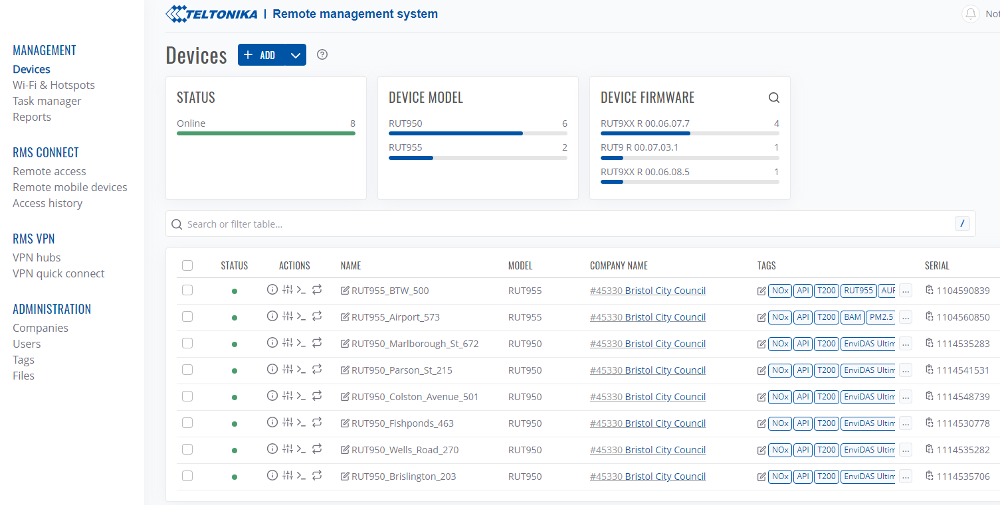
The function shown below takes the date span of interest, the device_url endpoint, the API Personal Access Token (PAT) - which is stored in an offline config.yml file, and a data frame holding the device ID’s. the single.site.data() function within it gets data for a single device. This function is then partialised and mapped over the ID’s of the routers to return a data frame with the daily data use for each device in a single table. This is subsequently used in a plot function.
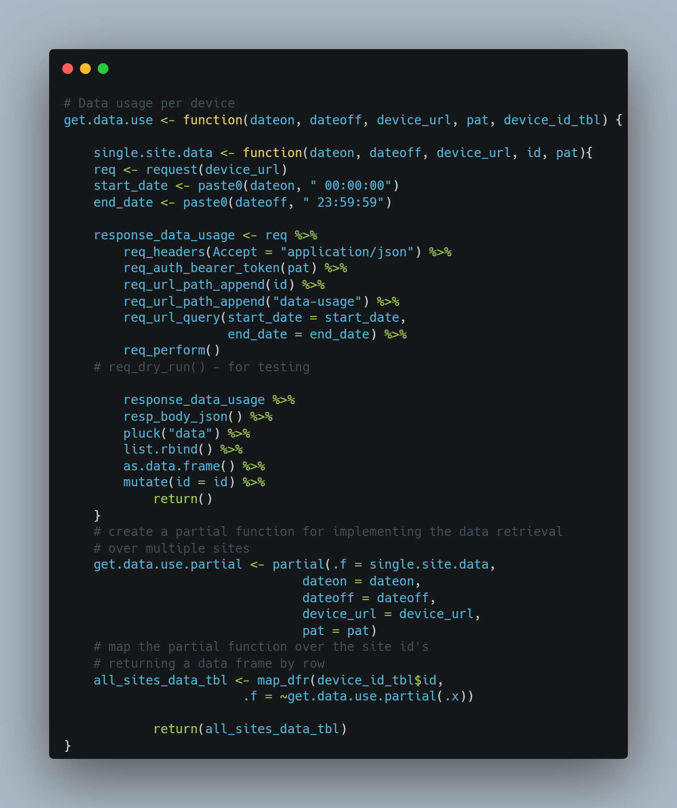
Plot Daily Data use of Routers
The function shown below takes a data frame of the daily data receive and transmit totals and uses the ggplot package to plot a faceted column chart showing daily receive and transmit data totals for each router. Appropriate theme adjustments are made to make a visually appealing chart.
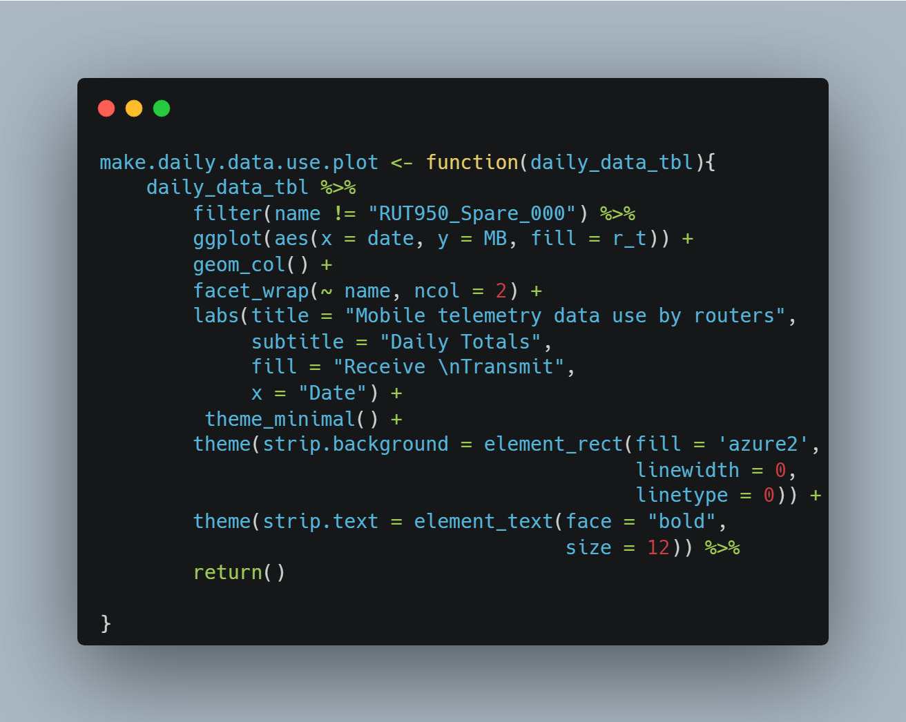
Targets Pipeline
All the functions used in the pipeline are implemented through the targets package. This creates a reproducible workflow by learning the dependencies in the pipeline and skipping redundant targets. This can save time when designing and testing the pipeline as computationally expensive targets are not re - run unnecessarily. Objects (targets) created by the targets pipeline are hashed to track changes to the data file. The hashes determine whether the target needs to be re - run.
The targets pipeline is built by coding a list of targets, where each target’s name is the object resulting from the command (function) of that target. A truncated example of the target’s list in this project is shown below.
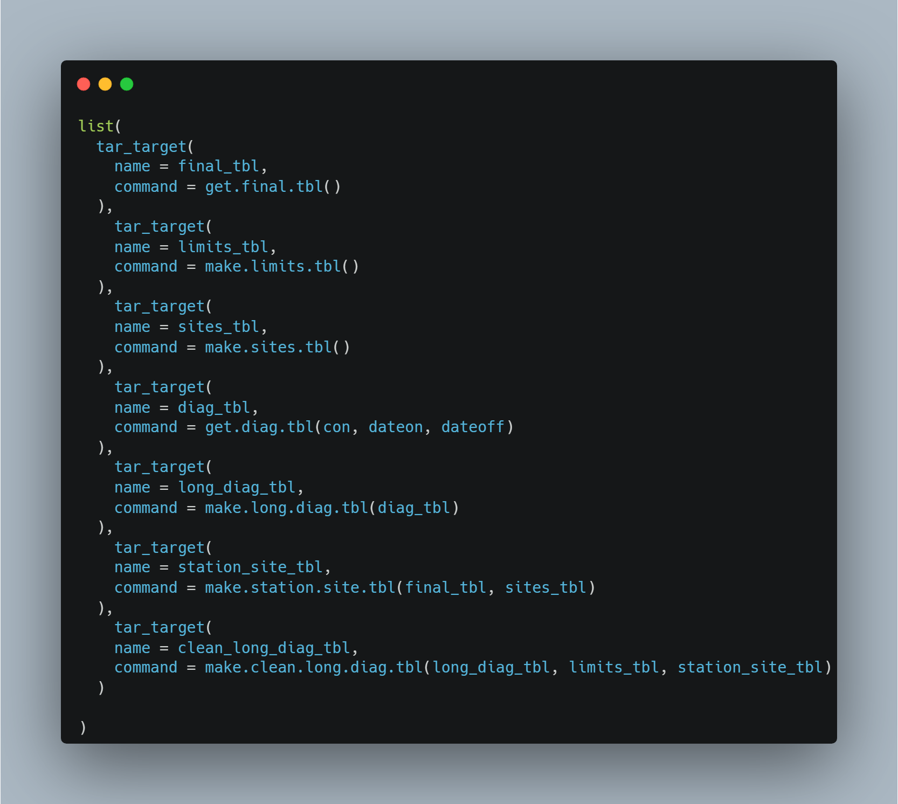
The dependencies created by the targets pipeline can be viewed using the tar_visnetwork() function. The image below is a subset of the entire network graph for the targets pipeline in this project and shows how functions, targets and outputs are related. The dependencies for the data_summary_tbl object are highlighted.
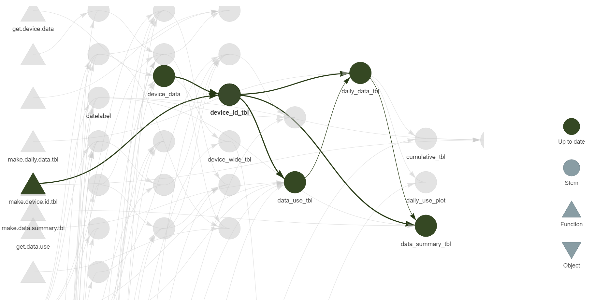
Reporting
The final reporting product needs to be easily readable and to highlight the key parameters which govern measurement quality and system reliability. I decided that an html output from a Quarto document would be the ideal option. The file is portable across systems and can be easily published for sharing with e.g. service contractors on a website such as Quarto pubs.
The key outputs in the report are as follows.
- A
gttable showing the amount and percentage of missing data for the measurement period - A
gttable with sparklines showing the calibration factors used and their ideal target values. This is broken down by pollutant and site and indicates whether calibrations are providing correct data which which to adjust the measurement data. - A chart showing the divergence of span values for two pollutants. This can indicate problems with contamination in calibration gas cylinders.
- Charts showing the data use of airtime data allowances by routers. This can help identify excessive data use, which could indicate security breach or operating system problem. If data thresholds are exceeded, airtime can be cut which would inhibit our real time reporting of air quality measurements.
- Time series charts of instrument diagnostics. These are compared to high and low “normal operating characteristics” to show when instrument problems may be developing. This could for example be the sample pressure declining, indicating a leak in the system.
Generating the QA Report
The report components listed above are generated by the targets pipeline and compiled into a Quarto document rendered into HTML. This process works by referencing the objects created in the targets pipeline within R code chunks in the qa_report.qmd Quarto document. An extract from the QA report is reproduced below to illustrate the format.
The top three lines are YAML which sets up the title, author and format. The next chunk, denoted by backticks (```) sets options and packages. The following sections are combined text and code chunks, similar to an iPython notebook. The R code in the chunks reads the relevant target to source and render the visualisation using the tar_read() function.
The overall process for running the pipeline and rendering the report is in three steps.
- Enter the start and end dates in the functions.R file
- Run _targets.R using the
tar_make()command - Render the qa_report.qmd report to create and display the HTML report
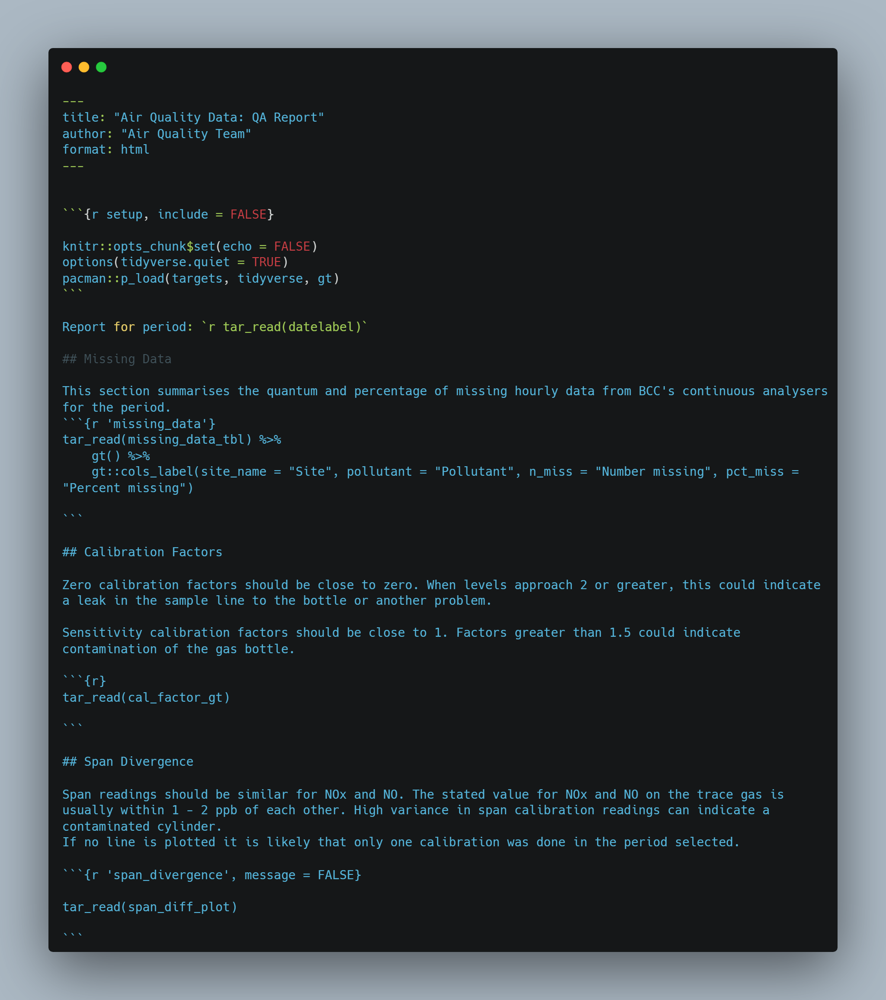
Although the final reporting will be through an html rendered quarto document, some examples are shown below.
This chart shows the diagnostics data for a single site. Some familiarity with the principle of operation of the instruments is needed to parse the data shown. The officer reading the report can be guided by the upper and lower limits shown in dotted blue lines. The chart or document can easily be sent to the equipment support unit (ESU - a third party company that maintains the instruments) to help them diagnose problems with the instrument.
Essentially the instruments contain components that should be maintained within certain parameters, for example Internal Box Temperature (the temperature inside the instrument should not go above 40C). If maximum temperature exceeds this level a malfunction could arise. Similarly a sample flow rate that deviates from the upper and lowe limits could indicate a leak or pump failure.

The bar chart shown below indicates the daily receive and transmit data use for each router. The Teltonika routers use multi - network SIMs that are capped at 3GB per month. Allowances are shared over all SIMs and refresh on the first day of each month. Six sites operated by BCC have EnviDAS data loggers running Windows 10. Windows updates and other downloads related to the loggers consume the majority of the data. Updates are often run at the end of the month so high data use is normal to see here.


The calibration factors chart shown below gives a visual check for the zero and span calibration factors for each pollutant at each calibration.
Zero calibration factors should be close to zero. When levels approach 2 or greater, this could indicate a leak in the sample line to the bottle or another problem.
Sensitivity calibration factors should be close to 1. Factors greater than 1.5 could indicate contamination of the gas bottle.

Span readings should be similar for NOx and NO. The stated value for NOx and NO on the trace gas is usually within 1 - 2 ppb of each other. High variance in span calibration readings can indicate a contaminated cylinder. If no line is plotted it is likely that only one calibration was done in the period selected.
In the example shown below, the Parson Street site is showing a significant change in the divergence between NOx and NO span values. This should trigger a call out to the ESU, who would advise on remedial action, in this case that the cause is likely to be a contaminated gas cylinder, where air has entered the cylinder and changed the concentration of the gas through oxidation.

Business Benefits
It is vital that stakeholders have confidence in the quality of air quality data. Multi - million pound decisions are taken on the evidence from air quality monitoring such as the implementation of a Clean Air Zone (CAZ). Hence there is a great deal of scrutiny of the data which must be defendable. The output from this project demonstrates that a rigorous QA process is conducted at monthly intervals on the data. It also ensures that operational parameters are regularly reviewed to maintain reliable data flow and real time publishing of our air quality data.